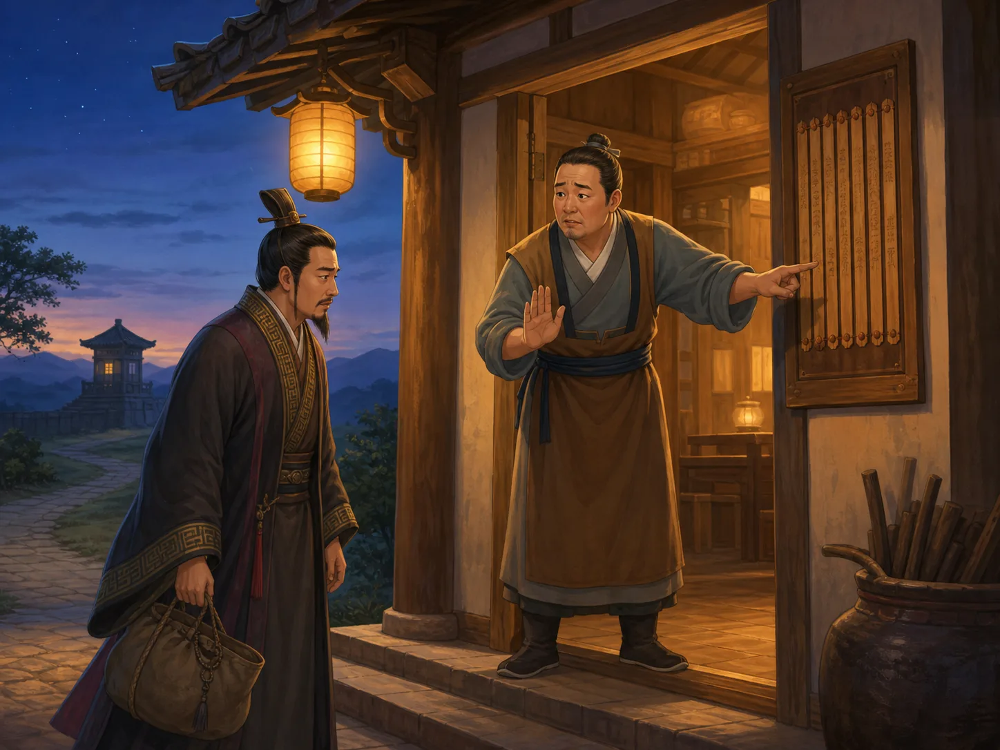

商鞅：国家变强时，谁付出了代价？
Shang Yang: Who Paid the Price When the State Grew Stronger?
阅读难度 · 困难Reading level · Hard
Page 1
搬一根木头，真能让全国相信新法吗？
Could Moving One Log Make a State Trust Its New Laws?

A modern imagined scene, not a record of a Qin city gate. The log story comes from Sima Qian's Records of the Grand Historian, written more than two centuries later, and should be read as a meaningful historical narrative.
秦国都城的南门外立起一根木头。告示说，谁把它搬到北门，就能得到十金。人们围着看，却没人相信这么容易的事会有重赏。赏金涨到五十金，终于有人动手；官府果然付款。接着，新法公布了。
这是“徙木立信”的著名故事，来自司马迁在商鞅去世两百多年后写成的《史记》。我们没有当天的告示、获奖者姓名或城门录像，不能把细节当成完全可核对的新闻。可这个故事准确抓住了改革的一道难题：写下一条命令不难，让千家万户相信官府真会照它执行，才难。问题还没有结束 - 政府说到做到，如果它要做的是严厉惩罚，这种“可信”对百姓意味着什么？
A log stands outside the southern gate of Qin's capital. A notice promises ten pieces of gold to anyone who carries it to the northern gate. People gather, but no one believes such an easy task will bring a great reward. The offer rises to fifty. At last, someone moves the log, and the government really pays. Then the new laws are announced.
This famous “moving the log to build trust” story comes from Sima Qian's Records of the Grand Historian, written more than two hundred years after Shang Yang's death. We have no original notice, winner's name, or recording from the gate, so its details are not checkable news. Yet the story captures a real problem of reform. Writing an order is easy; convincing thousands of families that officials will enforce it is hard. One question remains: if a government reliably carries out harsh punishments, what does that kind of “trust” mean for ordinary people?
Page 2
从卫国来的公孙鞅，为什么在秦国得到机会？
Why Did Gongsun Yang Find His Chance in Qin?
商鞅原名公孙鞅，也叫卫鞅，因为他来自小国卫。战国时代，各国不断竞争土地、人口和军队，人才也在国界之间流动。公元前四世纪中叶，秦孝公公开寻求能使秦国强盛的人，卫鞅来到西方的秦国，得到支持推行改革；后来他因受封商地，才被称为商鞅。
传统叙述常把改革分为公元前356年前后和公元前350年前后两轮。具体条款、先后和归属并不都同样确定，因为主要传记《史记》写得较晚，题为《商君书》的各篇也经过长期累积，并非一本由商鞅一次写定的政策手册。我们仍能看出方向：秦要把分散的人口、土地、赋税和军功变成政府可以记录、比较和调动的资源。
Shang Yang was born Gongsun Yang and was also called Wei Yang because he came from the small state of Wey. During the Warring States period, states competed for land, people, and armies, while talented advisers crossed borders looking for rulers who would listen. In the mid-fourth century BCE, Duke Xiao of Qin called for people who could strengthen his western state. Wei Yang came to Qin and won support for reforms. Only after receiving the territory of Shang did he become known as Shang Yang.
Traditional accounts often divide his changes into two rounds, beginning around 356 and 350 BCE. Not every rule, date, or attribution is equally certain. His main biography, in the Records of the Grand Historian, was written later. The chapters gathered as the Book of Lord Shang accumulated over time rather than forming one policy manual written by Shang Yang all at once. Still, the direction is clear: Qin wanted to turn scattered people, land, taxes, and military service into resources the government could record, compare, and mobilize.
Page 3
新制度打开了一些门，也关紧了更多门
The New System Opened Some Doors and Locked Others

A modern composite, not one documented reform meeting. Qin's changes involved household registers, farming, military merit, local administration, and measures - not one plan on one man's desk.
过去，贵族身份常来自祖先。新的军功爵制让一些普通男子可以凭战场功劳获得爵位、土地或其他奖励，也削弱了只靠血统保住特权的办法。政府鼓励耕作和织造，因为粮食、布匹、税收与士兵都能支持战争；县级官员、户籍和度量衡让中央更容易管理地方。对某些人来说，这是一条新的上升道路。
可是每扇门都有另一面。军功常和杀敌数量相连，奖励把个人希望绑在战争上。家庭被编入五家、十家一类的小组，彼此监视；知情不报可能一同受罚。政府鼓励成年男子分家，让每户更容易登记和纳税，也把家庭生活伸进国家账册。重农并不是给每个农民更自由，而是希望稳定地产出国家需要的粮食和劳力。
所以“商鞅让秦国更有效率”只说对一半。更完整的句子是：他推动的制度让政府更有能力奖励、征收、征兵，也更有能力监视和惩罚。
Earlier aristocrats often inherited status from their ancestors. Qin's new ranks of merit allowed some ordinary men to gain rank, land, or other rewards through military achievement. They also weakened the idea that noble birth alone should protect privilege. The government promoted farming and cloth production because grain, textiles, taxes, and soldiers could support war. Counties, household registers, and standard measures helped the center manage local communities. For some people, the system opened a new path upward.
But every open door had another side. Military merit was often tied to enemies killed, joining personal hopes to warfare. Families were organized into groups of five or ten households that watched one another; failure to report an offense could bring shared punishment. The government encouraged adult men to form separate households, making families easier to register and tax. Even family life entered the state's account books. Promoting agriculture did not simply give every farmer freedom. It aimed to produce the grain and labor the state needed.
So “Shang Yang made Qin more efficient” tells only half the truth. The fuller sentence is this: the institutions he promoted gave the government more power to reward, collect, and recruit - and more power to watch and punish.
Page 4
“法律面前一样”为什么不能直接等于现代法治？
Why Was Qin's “Same Standards” Not Modern Rule of Law?
《史记》说，太子犯法时，商鞅认为新法不能失信；因为太子不能直接受刑，便处罚他的老师和辅佐者。这个故事常被总结成“王子犯法与庶民同罪”，可原文恰好显示身份差别仍然存在：太子本人没有受到普通人会受的刑罚。它更像是在宣布贵族圈子也不能完全挡住国家命令，而不是建立人人拥有同等权利的现代法庭。
成文标准比贵族随意决定一切更可预测，但“有法律”不自动等于“有法治”。现代法治还要求政府权力受法律约束、审判程序公正、被告能够申辩。商鞅式政治首先关心的是让君主的国家强大，使官员和百姓按统一命令行动。规则也许清楚，处罚却可以非常重；国家检查人民，人民并没有同样的力量检查最高统治者。
The Records of the Grand Historian says that when the crown prince broke a new rule, Shang Yang argued that the law could not lose credibility. Because the heir could not be punished directly, his teachers and attendants were punished instead. This tale is often reduced to “princes and commoners were equal before the law.” Yet the story itself shows that rank still mattered: the prince did not receive the punishment an ordinary person would have faced. The message was that aristocratic circles could no longer block every state command, not that everyone had equal rights in a modern court.
Written standards can be more predictable than nobles deciding everything at will, but “having laws” is not automatically “rule of law.” Modern rule of law also requires limits on government power, fair procedures, and ways for an accused person to answer a charge. Shang Yang's politics first aimed to strengthen the ruler's state and make officials and subjects follow common commands. Rules might be clear while punishments remained extremely harsh. The state inspected its people; the people did not have equal power to inspect the highest ruler.
Page 5
地下的竹简，让我们看见制度怎样进入日常
Buried Bamboo Slips Show the System Entering Daily Life
商鞅时代的政府文件很少完整留下来，不过后来的秦墓和古井中出土了大量竹简、木牍。睡虎地秦简保存法律、官员办案指南和行政问答；里耶秦简中还有户籍、粮食、邮传和官府往来的日常记录。它们的年代多在商鞅之后，不能把每一条都算作他的亲笔改革，却证明秦国后来真的发展出一套细密的书写行政系统。
这套机器靠的不是商鞅一个人。抄写员要制作副本，地方官要收表格，信使要赶路，仓库要核对数字，百姓则被写进户籍。命令从都城传到远方也可能延误，官员会犯错，现实不会像法律条文一样整齐。把“强国”拆开来看，就会发现它不是一个抽象巨人，而是许多人不断登记、运送、耕作、服役和承受处罚的结果。
Few government documents survive intact from Shang Yang's own time, but later Qin tombs and wells have yielded thousands of bamboo and wooden slips. The Shuihudi texts preserve statutes, investigation models, and administrative questions and answers. The Liye slips include everyday records about households, grain, couriers, and messages between offices. Most date after Shang Yang, so each rule cannot be called his personal reform. They do show that Qin later developed a dense government system built with writing.
That machine did not run on Shang Yang alone. Scribes made copies, local officials collected forms, couriers traveled, storehouses checked numbers, and ordinary people entered household registers. Orders sent from the capital could still arrive late. Officials made mistakes, and life never fitted a statute perfectly. When we take the phrase “strong state” apart, we find no abstract giant. We find many people registering, carrying, farming, serving - and enduring punishment.
Page 6
旅店拒绝了他，但不是“法律自动杀死了创造者”
An Inn Refused Him - but “His Own Law Killed Him” Is Too Simple

A modern imagined scene, not a record of Shang Yang's flight. The inn episode comes from the later Records of the Grand Historian, which shapes his end into powerful historical irony.
公元前338年，支持商鞅的秦孝公去世，新君即位，旧日的政治敌人指控商鞅谋反。《史记》说他逃到边关，想住旅店；店主不知道客人是谁，解释说商君的法律禁止接待没有证件的人，否则旅店也要受罚。商鞅叹息自己制定的法律竟到了这种地步。这个场面太巧，正适合作为司马迁笔下的反讽，却仍不是当事人的逐字回忆。
商鞅后来试图逃往魏国未成，又回到封地抵抗秦军，战败被杀。秦惠文王随后将他的尸体车裂示众，并诛灭家族。说他“完全按自己的法律被判死刑”并不准确：权力斗争、谋反指控和武装反抗都参与了结局。更值得注意的是，新君杀了改革者，却没有把重要制度全部取消。一个人可以被政治机器消灭，他帮助扩大的机器仍会继续运转。
In 338 BCE, Duke Xiao - Shang Yang's protector - died. A new ruler took the throne, and old political enemies accused the reformer of rebellion. The Records of the Grand Historian says Shang Yang fled toward the frontier and tried to stay at an inn. Not knowing his identity, the innkeeper explained that Lord Shang's law forbade accepting a guest without proper papers; the inn would be punished too. Shang Yang supposedly sighed at what his laws had become. The scene is almost perfectly ironic, which makes it powerful history-writing - but not a word-for-word memory from the fugitive.
Shang Yang then failed to escape into Wei, returned to his own territory, resisted Qin forces, and was killed. King Huiwen of Qin had his corpse torn apart and displayed, and his family was destroyed. It is misleading to say that Shang Yang was simply “sentenced to death by his own law.” Political revenge, an accusation of rebellion, and armed resistance all shaped his end. More important, the new ruler killed the reformer without discarding all the major institutions. A political machine can destroy someone who helped enlarge it and still keep running.
秦国的力量，不是一张没有背面的成绩单
Qin's Strength Was Not a Report Card with Only One Side
商鞅的改革帮助秦国削弱世袭贵族、奖励军功、扩大登记和地方管理，也为长期战争积累资源。秦统一六国发生在他死后一百多年，不能算作他一个人的作品；其他改革者、君主、官员、士兵、农民、地理条件和对手的选择都在其中。
真正困难的历史问题，不是给商鞅贴上“伟大改革家”或“残酷坏人”中的一张标签，而是同时看见能力和代价。制度让谁有了新机会？谁被更紧地控制？国家的成功能不能抵消个人承受的痛苦？一根木头可以被搬过城门，评价一场改革却不能只从一头搬到另一头。
Shang Yang's reforms helped Qin weaken hereditary privilege, reward military service, expand registration, and manage territory more directly. They also helped gather resources for long wars. Qin conquered all six rival states more than a century after his death, so unification was not one man's creation. Other reformers, rulers, officials, soldiers, farmers, geography, and the choices of Qin's rivals all mattered.
The difficult historical task is not choosing between two labels - “great reformer” or “cruel villain.” It is seeing capacity and cost at the same time. Who gained a new opportunity? Who came under tighter control? Can a state's success cancel the suffering of individuals? A log can be carried from one gate to another. Judging a reform cannot be moved so easily from one extreme to the other.